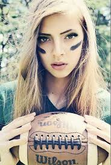

|  | Mam na imię Kasia Kowalska. Mam 15 lat. Urodziłam się 28 lutego. Mam 7 rodzeństwa. Uczę się jeszcze w szkole i nie narzekam na moje oceny i zachowanie. |
Teraz trochę o moich zainteresowaniach bardzo lubię czytać moja ulubiona książka to "Spójrz na mnie". Spójrz na mnie to historia miłości pomiędzy dwojgiem na pozór całkowicie różnych osób. Ona to absolwentka prawa na prestiżowej uczelni. On to wykolejony młody mężczyzna, który ma sobą trudny i skomplikowany życiorys. Jednak pomimo różnic, tych dwoje zostaje parą. To jednak dopiero początek historii, która, jak to u Sparksa, toczy się w sposób kręty i zawiły, aby wreszcie doprowadzić czytelnika do finału, którego nawet nie śmiał podejrzewać. Bez wątpienia, "Spójrz na mnie " Nicholasa Sparksa to pozycja obowiązkowa nie tylko dla zdeklarowanych wielbicieli prozy obyczajowej uznanego amerykańskiego autora, ale również po prostu dla wszystkich czytelników ceniących sobie dobrze napisaną, wnikliwą i poruszającą literaturę. |
Po prostu kocham zwierzęta. Nie wyobrażam sobie życia bez nich. Mam w domu jednego pupila. Jest to piesek rasy boo. Jest one jeszcze szczeniaczkiem. Wabi się on Azor. Bardzo lubię się z nim bawić. Chociaż jest jeszcze mały to nauczyłam go już aportować i mam nadzieję że nauczy się wiele innych ciekawych sztuczek |